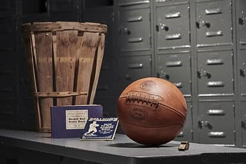
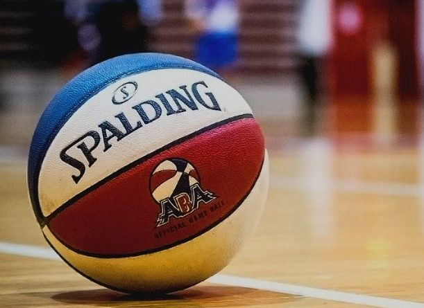
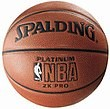
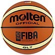
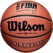

Hasta los años 40, los balones tenían la particularidad de no rebotar tanto como los de ahora, debido a que el caucho estaba recubierto por una malla o tela, con una vejiga de goma. Esto ayudó a que tuviera mayor uniformidad, aunque para lo años 60 todo cambió, con un nuevo balón.
Una de las particularidades de esta liga era el balón tricolor, cambiando radicalmente al tradicional marrón que no cambia de color de la fundación de este deporte. Aunque la ABA dejó de existir, permitió que se adoptara algunas cosas para la NBA posteriormente a su desaparición.
El balón Spalding, de la empresa con el mismo nombre, es la marca oficial de la NBA desde 1983, aunque fueron los pioneros con los primeros años del baloncesto a finales del siglo XIX.
Molten, es la empresa japonesa que se dedica a fabricar balones para todos los Campeonatos FIBA en sus fases de clasificación, también los torneos asiáticos, algunas ligas domésticas de Europa, Asia y Sudamérica, y hasta 2007 era el balón oficial de Euroliga de baloncesto.
Otra marca que ha estado vinculada al baloncesto, es Wilson. Este balón ha estado vinculado para formar a todos los jugadores del baloncesto universitario en los Estados Unidos, con la NCAA, el baloncesto femenino y es el balón usado por las universidades en ese país. Varias fuentes mencionan que podría ser el balón oficial de la NBA en poco tiempo.
